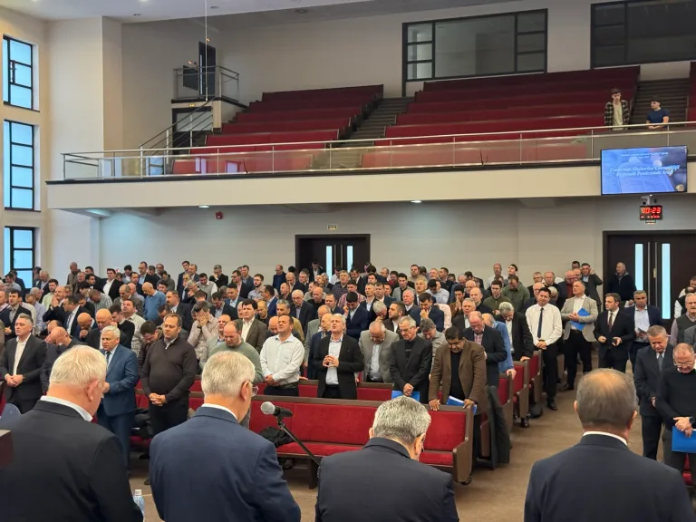
6 decembrie 2025
Conferință pastorală
Discernământ. Discipline. Dedicare. — O conferință care ne reașază chemarea.
Despre noi
Comunitatea Regională Penticostală Arad aparține Cultului Creștin Penticostal. Coordonăm în mod transparent activitatea bisericilor penticostale din județele Arad, Timiș, Hunedoara și Caraș-Severin, cultivând unitatea frățească și responsabilitatea față de Scriptură.
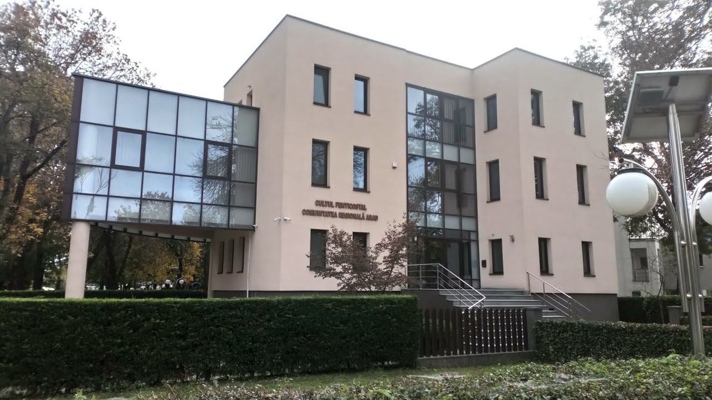
Comitet
Pastori și slujitori care coordonează activitatea comunității regionale.
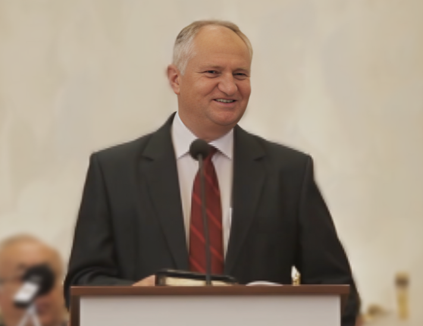
Președinte
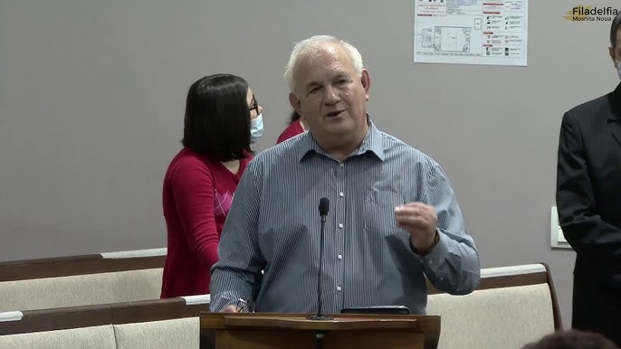
Vicepreședinte
Secretar
Pastor
Pastor
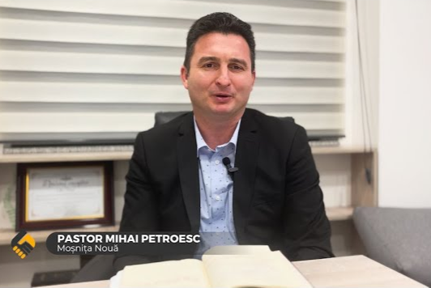
Pastor
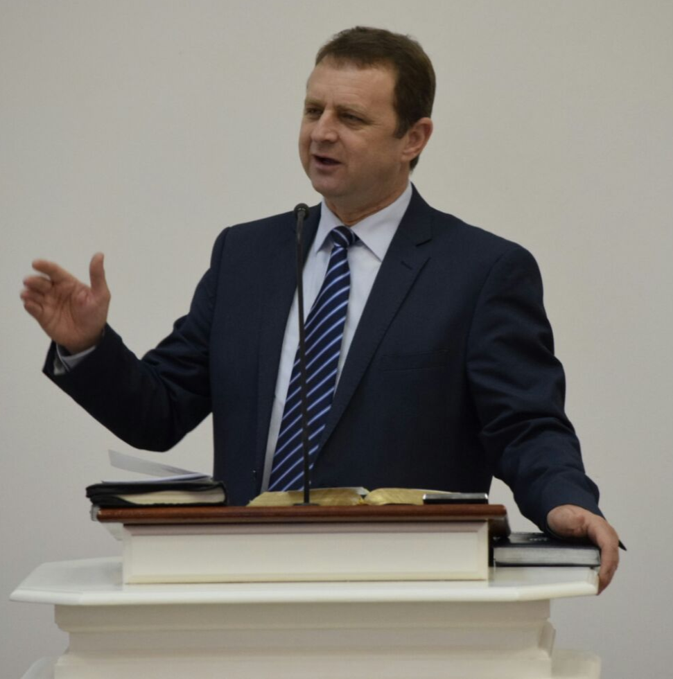
Pastor
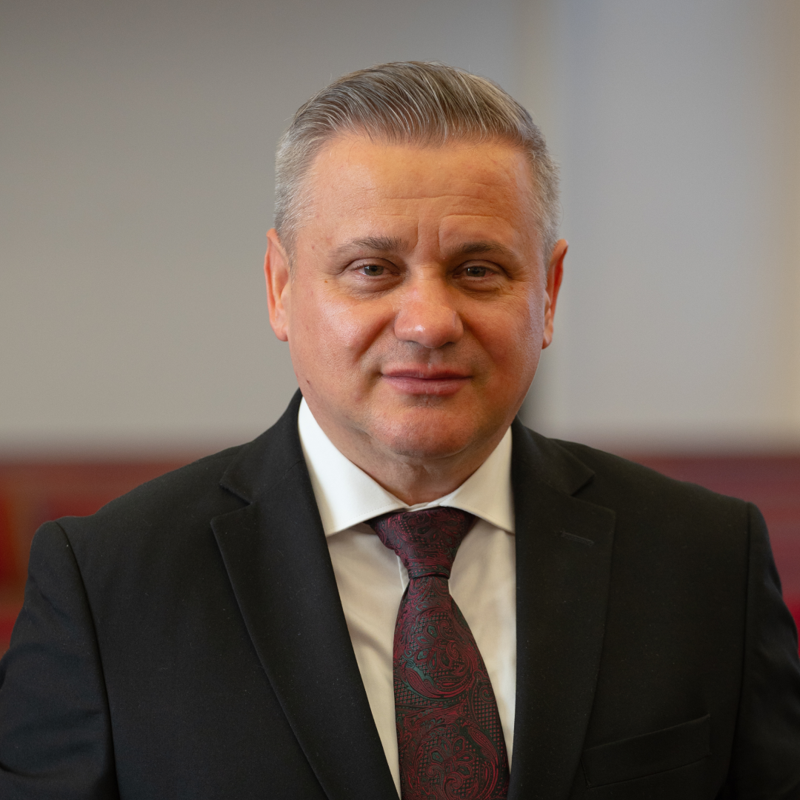
Pastor
Pastor
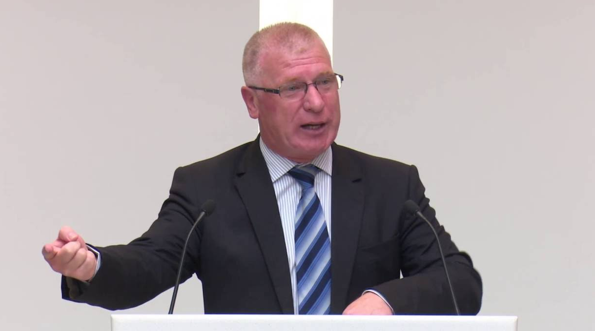
Pastor
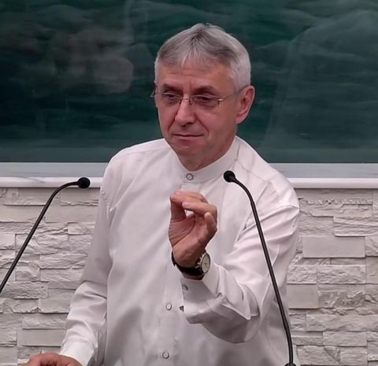
Pastor
Documentele fundamentale ale credinței și organizării în cadrul Comunității Regionale.
Regiunile noastre
Oferim sprijin, coordonare și resurse bisericilor penticostale din cele patru județe ale regiunii noastre.
Evenimente
O privire de ansamblu asupra întâlnirilor și conferințelor importante din comunitatea noastră.

6 decembrie 2025
Discernământ. Discipline. Dedicare. — O conferință care ne reașază chemarea.
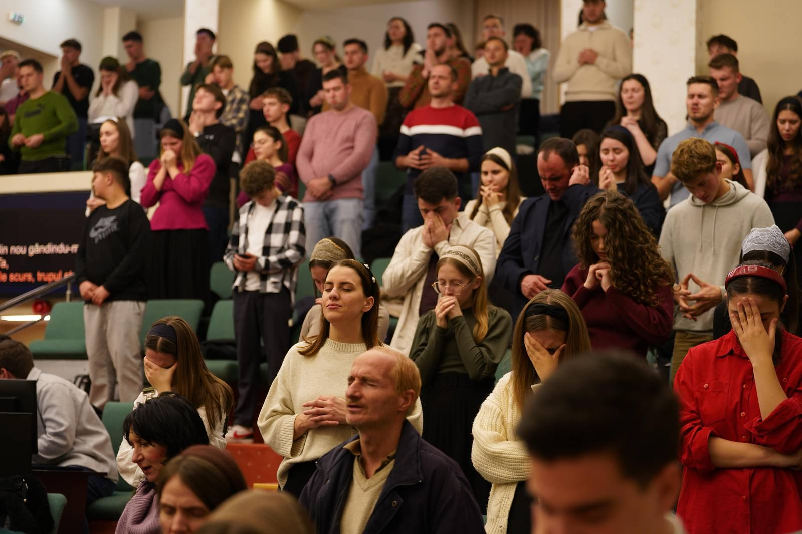
3 decembrie 2025
O seară de laudă, închinare și mesaj biblic pentru tinerii din regiune.
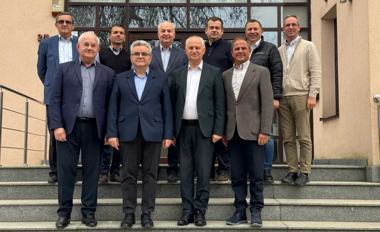
2 decembrie 2025
Educația teologică – investiție strategică pentru generațiile care vin.
SEMINARII
Sesiuni de instruire, studiu biblic și formare spirituală dedicate slujitorilor și comunității.
Învățături fundamentale pentru lideri și lucrători ai bisericii.
Echipare teologică pentru slujire.
Înscrieri deschise pentru formare teologică.
Pregătire biblică pentru slujire.
Pregătire biblică pentru slujire.
Locație
Sediul Comunității Regionale Penticostale Arad se află în inima orașului Arad.
Str. Miron Costin, Nr. 2A
310146 Arad
Luni–Vineri, 9:00–17:00
0257-281-398
0257-210-404
Contact
Ne puteți scrie pentru întrebări legate de evenimente, colaborări sau informații administrative. Vom direcționa mesajul către persoanele potrivite.
Str. Miron Costin, Nr. 2A
310146 Arad
Luni–Vineri, 9:00–17:00
0257-281-398
0257-210-404